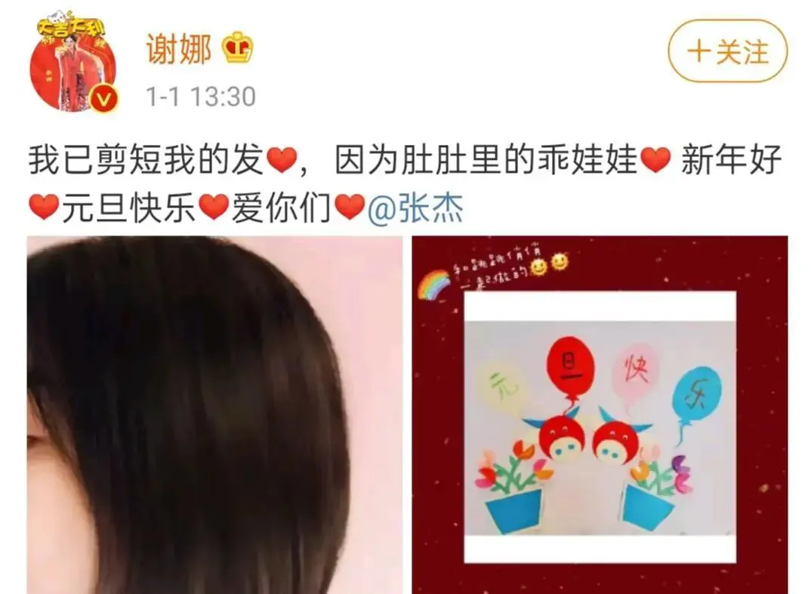
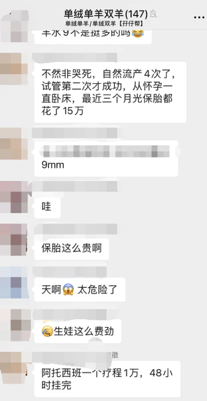
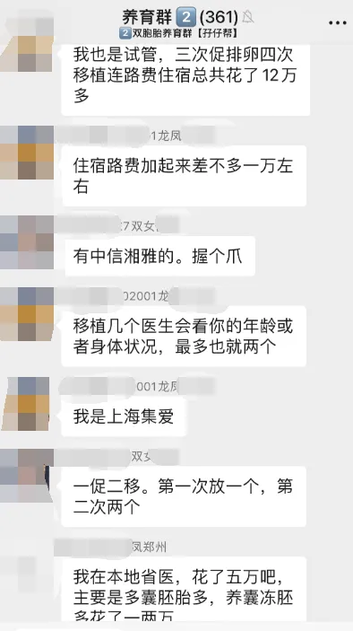
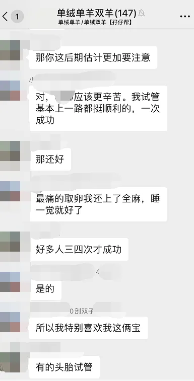
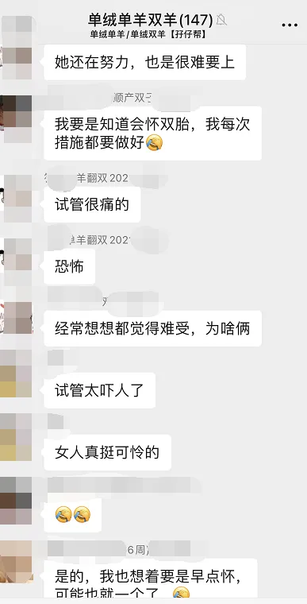
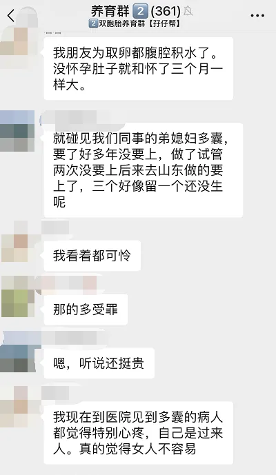
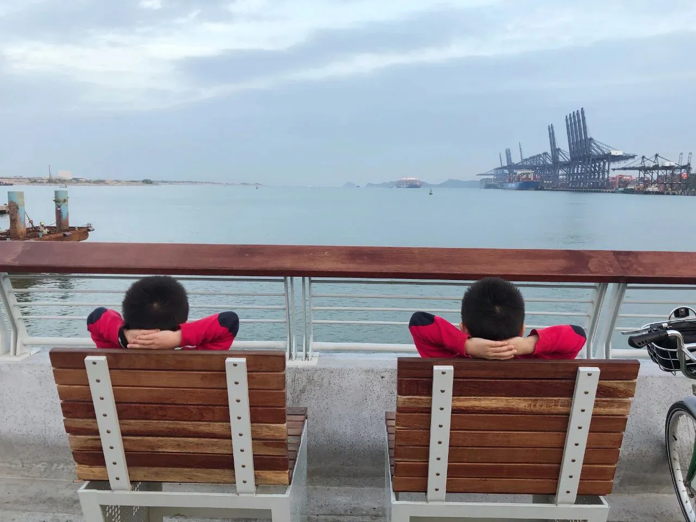

孖仔帮
公众号ID：twinsbang
关注
文|圆圈妈
网图|侵删
当妈后就很少关注娱乐新闻，甚至有点后知后觉，前段时间轰炸整个娱乐圈的爽事件，我竟然才发现，只是做了全职妈妈而已，怎么就穿越回古代了，此处心疼自己与社会脱节10秒钟。
原本计划提前进入春节模式，断更几天，给自己放个假，但这次爽妹子的这DY瓜实在太大，太耐人寻味了，今日不得不发文吐槽下。
虽然现在头条已经换成马金瑜被家暴事件，爽妹子本人也回了东北老家，但她那句“TMD，打都打不掉，我都烦死了”，依然余音绕梁，难以下咽。
本来对她无感，这会儿感觉像大口吃芥末一样，一股冲劲儿直冲云霄，脑门儿都快被气炸了！
把生孩子这么神圣伟大的事情，搞得跟逛淘宝一样，还7天无理由退换货。
随着爽事件的不断发酵，许多生双胞胎的明星也莫名躺着中枪，最无辜的是目前二胎中的谢娜，本来岁月静好安心待产的她，不得不露下脸，自证清白。
心疼娜姐一秒钟，一胎双胞胎就备受质疑，试管or代孕？这会儿来了二胎，啥话不说，先上孕照，有图有证据。
难怪最近小区的大妈们看我的眼神都特别不对劲，只差没脱口而出：“做这俩娃一定受了不少罪吧？”代孕是不是特别轻松啊？”
哎，我去，莫名其妙啊！大妈们，有空看看我的朋友圈好吗？我也是有图有真相的。
看来不管是明星还是普通老百姓，只要跟双胞胎扯上点关系，命中注定小日子此起彼伏，轰轰烈烈。
作为普通的双胞胎妈妈，我真是受够了，就因为遛的娃是对双胞胎，走在大街上就要遭受各种异样的眼光，沦为路人武断臆测的谈资，甚至会被问到很多隐私的问题。
有些问题还让人感觉智商被按在地上摩擦了很久，关键是，某些好事者还没问出口，自己却忍不住先笑了...
每次我都感觉很强迫，很受辱，很气愤...心里早已有千万批草泥马奔腾而过：“笑你妹啊”，但又非常不情愿地回答诸如以下这些问题：
他们俩谁带啊？
这俩谁是老大谁是老二啊？
他们俩会打架吗？谁打赢了？
哎呀太神奇了，他们长这么像，你们怎么区分啊？
你们会不会搞错，一个洗两次澡，另一个没洗...哈哈！
他们有没有心灵感应啊？一个受伤，另一个也跟着疼？
哎呦妈呀，太辛苦了，晚上谁带睡啊？
生出来多重啊？是早产吗？
有奶吗？够喝不？
跟我一起遛娃的朋友很纳闷，为什么我作为双胞胎的妈妈，对他人的关注那么冷谈。
我何尝不感到郁闷，只是两个长得特别像的孩子而已，为什么有那么多人大惊小怪？
圆圈兄弟从小就是师奶杀手，每次出门溜达都会吸引一群大妈大婶围观，这听起来好像蛮拉风的，然而，并不！作为当事人的我相当憋屈，请原谅我的界限感太强，真不喜欢被人过度关注着。
别说我凡尔赛，总喜欢用最低调的话，炫最高调的耀！试想一下，曾经的你走在路上是入口即化的狗不理包子，现在带着双胞胎出街，倒成了褒贬不一的网红脏脏包。
这种感觉能好受吗？
我以为就我暗自不爽，渐渐长大的圆圈也时常很不解地问：“妈妈，为什么那些奶奶要问那么多问题啊？”
我只能告诉他们，可以不回答，么么哒一下就好。
但是，以下这个问题例外：你这双胞胎是家族遗传还是....
促排？试管？
刚开始的确很不爽这样的问题，而且很想怼回去，每一位健康的女性，除非万不得已，必然是不会去做伤害自己身体的事情。
这么一问，倒让我觉得，敢情这是在怀疑我是不是哪里不行？
可能被问得多了，早已麻木了，后面也看淡了，嘴巴长人身上，随便吧！现在试管双胎很普遍，是又怎样，不是又怎样，让吃瓜的人继续啃吧！
话说，我曾经也是那个吃瓜的人，对试管双胎有偏见，然而建立公众号，接触到许许多多的试管双胎妈妈后，彻底改观了。
我们的双胞胎社群有部分是试管双胎，看到坚强勇敢的准妈妈们分享的试管双胎血泪史，一次次的失败，又一次次的重来，再一针一针地往身上刺，隔着屏幕都能感受到，女人为了当妈妈该有多拼啊。
左右滑动查看更多
那些不得已走上试管这条路的准妈妈，遭受了多少罪，才能成功生下一对健康的双胞胎。
敢问键盘侠们，试管咋啦？抢你爱豆了吗？偷你钱了吗？吃你家大米了吗？请高抬贵手，积点口德吧。
爽妹子说了，都2021年，代孕都不稀奇，试管算什么，都散了吧。
可能爽妹子的瓜太大了，几乎所有人都拿代孕来做茶余饭后的话题。
前日带圆圈哥俩去公园踢球，遇到两位跳广场舞的大妈，擦肩而过时听到她们的对话：“你看那一对双胞胎啊，长得好像啊，我们那一楼对门也有一对双胞胎，听说也是代孕的，花了100多万啊。”
请注意措词，什么叫【也】？
看我这熊腰虎背的身段，单手就能抱俩娃的身手，追着俩娃满大街跑的英姿，再加上逛淘宝按价格排序的行为习惯，就知道如此健康又抠门的中年妇女，怎么会傻到去DY。
我有的是肚子呢，不会自己生啊。
我笃定，这两人肯定是沉浸在爽事件无法自拔，瓜没吃够，嘴皮子还痒，来我这找点安慰。莫名躺着中枪，我只能自我阿Q一下，呵呵，我给自己省了200万。
真心呼吁！
请对我们这群不小心，不知情，无计划，全程懵逼，最后掉坑无法自拔....就生了对双胞胎的女人，多一点友善和鼓励吧！
曾经，我们也是小仙女一枚，婀娜多姿，仪态万千，只是有一天不小心被大自然恶作剧了下，身边突然来了两个小生命，还为此日夜操劳，殚精竭虑，全靠一口仙气吊着，还未油腻，已经衰老！
请对双胞胎这个群体多一点常识性的认知和理解吧！
双胞胎≠克隆人，他们拥有不同的甚至相反的个性，跟普通的兄弟姐妹一样，一点都不神秘，只是一个机缘巧合下，同年同月同日几乎同时出生了。有些长得像，有些长得不像，不管相貌如何，也是两个独一无二的个体，数控车间的产品还有质优等级，天下没有两片相同的树叶，更何况是活生生的两个孩子。
圆圈妈妈新年寄语
受疫情影响，我们积极响应幼儿园老师的号召，决定原地过年。
深飘11年了，这竟然是我和孩子们第一次在深圳过年。
为此，特意给自己和他们爷仨准备了一场期待已久的跨年旅程，预定了大梅沙一个面朝大海，春暖花开的度假酒店，好好浪一回。
在此预祝所有双胞胎老父亲老母亲们，新年快乐，牛年大吉，心里有爱，兜里有钱，边上有娃，幸福满满。
-END-
今日互动话题
#快来过招#
当有人问你家双胞胎是自然还是试管，你会怎么回答？
评论区聊一聊呗！
微信公众号：孖仔帮
ID : twinsbang
专注双胞胎孕育，养育，教育经验分享
扫码关注我们
点一下你会更好看耶







